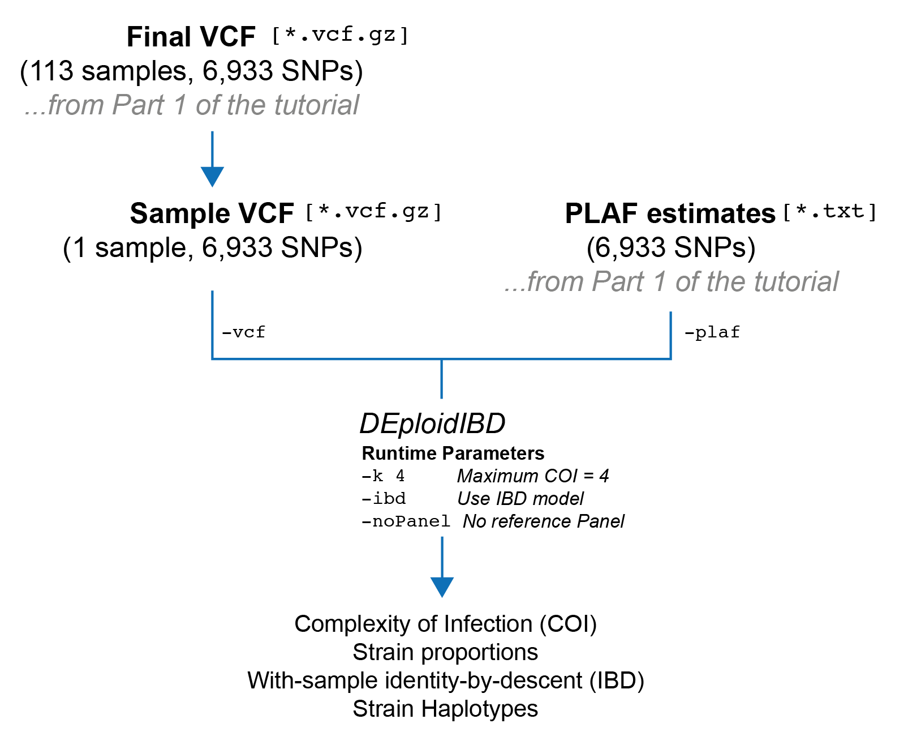
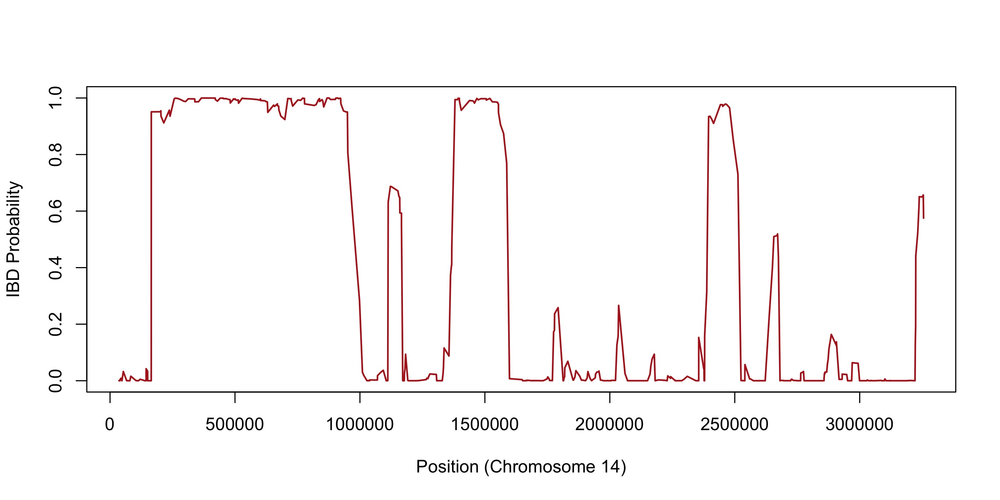

Part 2: Reference-panel free deconvolution with DEploidIBD
Overview
In this section, we are going to run DEploidIBD on a single sample without using a reference panel. After this is completed, DEploidIBD will have produced an estimate of the complexity of infection (COI), the proportions of each strain, and IBD profiles for every pair of strains within the sample. Finally, we will go over the output files and what they contain.

Prerequisites
Please ensure you have completed both ‘Installation’ and ‘Part 1’ of the tutorial. At this point, you should have: - Installed DEploidIBD - Installed bcftools - Filtered your input VCF - Created a text file containing population level allele frequency (PLAF) estimates for each SNP from your filtered VCF
Your directory structure should look like:
.
├── data -> /path/to/PGEforge/data
├── data_filtered
│ ├── intermediates
│ ├── pf3k.DRCongo.final.plaf.txt
│ └── pf3k.DRCongo.final.vcf.gz
├── resultsRunning DEploidIBD for an individual sample
Selecting a sample
DEploidIBD runs on only one sample from a population at a time. This means we need to subset our input VCF down to an individual sample of interest. Let’s first create a folder where we will store per-sample VCFs:
mkdir -p data_filtered/by_sampleNext, we will use bcftools to filter our VCF to an individual sample. Here, I have chosen the sample QG0182-C, which is simply the first sample in the metadata file located at PGEforge/data/wgs/pf3k/DRCongo/pf3k.metadata.DRCongo.csv. Let’s define some commands in bash to make our code a bit cleaner:
TARGET_SAMPLE=QG0182-C
SAMPLE_VCF=data_filtered/by_sample/pf3k.DRCongo.$TARGET_SAMPLE.vcf.gzOur input VCF should be the filtered VCF from the previous part of the tutorial:
INPUT_VCF=data_filtered/pf3k.DRCongo.final.vcf.gzAnd now we can filter:
bcftools view $INPUT_VCF -s $TARGET_SAMPLE -Oz -o $SAMPLE_VCFIf we run:
bcftools stats $SAMPLE_VCF | grep ^SNWe should see that our VCF contains only a single sample, and the same number of records as our filtered VCF:
SN 0 number of samples: 1
SN 0 number of records: 6933
SN 0 number of no-ALTs: 0
SN 0 number of SNPs: 6933
SN 0 number of MNPs: 0
SN 0 number of indels: 0
SN 0 number of others: 0
SN 0 number of multiallelic sites: 0
SN 0 number of multiallelic SNP sites: 0Running DEploidIBD
Let’s create an output folder to store the results from DEploidIBD:
RESULT_DIR=results/$TARGET_SAMPLE
mkdir -p $RESULT_DIRFinally, it is time to run DEploidIBD
dEploid -vcf $SAMPLE_VCF -plaf $PLAF_TXT -o $RESULT_DIR/$TARGET_SAMPLE -k 4 -noPanel -ibdHere is a table explaining the flags we’ve used:
| Flag | Meaning |
|---|---|
-vcf |
Path to input VCF file. |
-plaf |
Path to PLAF text file. See Part 1 of the tutorial for details |
-k |
The maximum COI that will be inferred. The default value is 5, but in practice 4 is probably the limit for WGS data. |
-noPanel |
Do not use a reference panel for haplotype inference. |
-ibd |
Run the IBD model, e.g. DEploidIBD. In this model we handle within-sample IBD |
With these flags, DEploidIBD should take a few minutes to run on a laptop and print some basic information to the screen. Let’s have a look:
#########################################
# dEploid v0.7.1-beta log #
#########################################
Program was compiled on: Mon-11-Dec-2023-17:23:28-UTC
dEploid version: 47533f7526ed8f7b615750969e9b008054bdc7fc
lasso version:
Input data:
PLAF: data_filtered/pf3k.DRCongo.final.plaf.txt
VCF: data_filtered/by_sample/pf3k.DRCongo.QG0182-C.vcf.gz
MCMC parameters:
MCMC burn: 0.5
MCMC sample: 800
MCMC sample rate: 5
Random seed: 0
IBD Method used: YES
Update Prop: NO
Update Single: YES
Update Pair: YES
Other parameters:
Miss copy prob: 0.01
Avrg Cent Morgan: 15000
G: 20
IBD sigma: 20
ScalingFactor: 100
VQSLOD: 8
Initial prob: 0.00194298 0.895357 7.5923e-16 0.1027
MCMC diagnostic:
Accept_ratio: 0
Max_llks: -11603.3
Final_theta_llks: -8827.36
Mean_llks: -8967.05
Stdv_llks: 25.5135
DIC_by_Dtheta: 18213.5
DIC_by_varD: 19236
Run time:
Start at: Wed Dec 13 16:02:39 2023
End at: Wed Dec 13 16:08:18 2023
Output saved to:
IBD method output saved to:
Likelihood: results/QG0182-C/QG0182-C.*.llk
Proportions: results/QG0182-C/QG0182-C.*.prop
Haplotypes: results/QG0182-C/QG0182-C.*.hap
IBD probs: results/QG0182-C/QG0182-C.ibd.probs
IBD probabilities:
0-1: 0.740756
1-1: 0.259244
IBD best path llk: 8192.76
Effective_K: 1.2312
Inferred_K: 2
Adjusted_effective_K: 1.2312
Proportions:
0.00194298 0.895357 7.5923e-16 0.1027The most critical estimates are at the bottom. We can see that DEploidIBD has inferred a COI, here denoted \(K\), of two:
Inferred_K: 2It also reports another statistic, called the “Effective COI” (\(K_{eff}\)), with this sample having \(K_{eff}=1.231\).
Effective_K: 1.2312
Inferred_K: 2Effective COI has the following definition:
\[ K_{eff} = \frac{1}{\sum_{j=1}^{K} p_{j}^2} \]
As you can see, this statistic takes into account the proportions of the strains in the infection and produces a continuous-valued statistic rather than an interger, as is the case with COI. In particular, \(K_{eff}\) will be in the range of \([1, K]\). If the strains in the infection have balanced proportions, the \(K_{eff}\) value will be close to \(K\). On the other hand, if strains within the infection have very low proportions, these will contribute only marginally to the \(K_{eff}\), and as a result it can be considerably lower than the COI (\(K\)). In our case we can see the inferred proportions are:
Proportions:
0.00194298 0.895357 7.5923e-16 0.1027The two proportions below 0.01 are discard, so the proportions of our strains of interest are 0.89 and 0.1. This examples why our \(K_{eff}=1.231\) value is quite low: these proportions are relatively unbalanced.
If we look in the metadata file at data/wgs/pf3k/DRCongo/pf3k.metadata.DRCongo.csv we can see that sample QG0182-C has a \(F_{ws}\) value of 0.843. Canonically, as sample with \(F_{ws} < 0.95\) is classified as polyclonal. So the inference from DEploidIBD of a \(K=2\) is consistent with the \(F_{ws}\) statistic for this sample.
Finally, let’s quickly look at the IBD outputs. The average proportion of the genome in each possible IBD configuration is given here:
IBD probabilities:
0-1: 0.740756
1-1: 0.259244In this case, “1-1: 0.259” indicates that the two strains have an average relatedness of 26% across the genome. The full IBD profile is stored in the file results/QG0182-C/QG0182-C.ibd.probs. This gives, for every SNP posiiton, the probability that the sample is in each IBD configuraion. We can quickly make a plot using R:
ibd_path <- "results/QG0182-C/QG0182-C.ibd.probs"
ibd_df <- read.csv(ibd_path, sep="\t", header=F)
# Unfortunately, due to a trailing tab, we have to munge a bit
columns <- ibd_df[1,1:4]
ibd_df <- ibd_df[2:nrow(ibd_df), 1:4]
colnames(ibd_df) <- columns
# We will plot the IBD status of chromosome 1
chrom14_df <- subset(ibd_df, CHROM == 'Pf3D7_14_v3')
# Plot
plot(
x=chrom14_df[,"POS"],
y=chrom14_df[,"1-1"],
main="",
xlab="Position (Chromosome 14)",
ylab="IBD Probability",
type='l',
lwd=1.5,
col="firebrick",
ylim=c(0, 1)
)Which should produce the following plot:

We can see three high-probability IBD blocks within this figure, and several smaller IBD blocks with a higher degree of uncertainty.